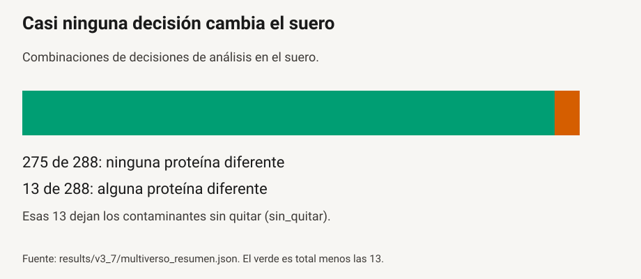

Qué se puede afirmar
- El flujo procesa cuatro matrices públicas sin fusionar intensidades, deja sello en las salidas y un certificado publicable.
- El sentido del cambio entre tumor primario y mucosa se repite en las 147 proteínas comparables.
- En el suero, el contraste principal no declara ninguna proteína diferente entre cáncer y colonoscopia negativa.
- La separación que logran los modelos es compatible con la calidad de la muestra y con el orden de medición.
- Una segunda ejecución reprodujo 35 métricas de referencia sin ninguna fuera de tolerancia. El modelo principal, evaluado otra vez en la misma corrida, coincide (
determinismo.json).

Qué no se puede afirmar
- No hay una prueba diagnóstica, ni una estimación de utilidad clínica, ni una asignación de las muestras a un segmento del colon.
- No se puede separar el grupo clínico del lote: el orden de adquisición coincide con el grupo.
- Tejido y suero no son de las mismas personas. La comparación es de resultados, no de individuos.
- TMT, LFQ y DIA no se fusionan. La concordancia se limita al sentido del cambio.
- Veinte sueros por grupo alcanzan para ver cambios grandes, no para descartar cambios pequeños.
- La colonoscopia negativa reúne varias enfermedades intestinales. No es un grupo puro.
- No hay una cohorte colombiana identificada en estas matrices.
- Tres de cuatro controles físicos del tejido no se pueden medir en la segunda cohorte.
- El suero por estadio no fue evaluable para la pregunta de carga tumoral epitelial.
El contraste principal del suero usa reglas fijadas de antemano. Los modelos y el análisis del orden de medición se leen como exploratorios: describen esta corrida y no confirman un marcador.
Nada de esta página sirve para decidir sobre un paciente.